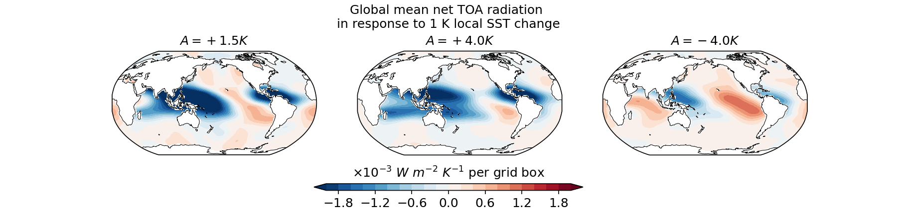
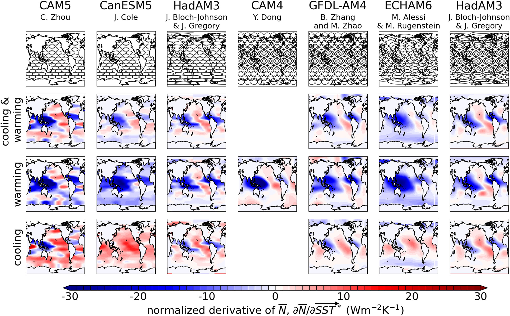

The SST pattern effect in AM4
Overview: We explores how regional sea surface temperature (SST) changes affect global radiative feedbacks using the Green's function (GF) approach. Using AM4 and CM4 models, We find that GF derived from idealized SST warming experiments can replicate global and regional responses in AM4. However, replicating the magnitude of responses from CM4's SST patterns remains a challenge. Decomposing SST patterns into global-mean values and anomalies helps reduce biases. Factors like SST perturbation amplitude, integration time, and confidence levels in significance tests affect GF performance. Some related data can be found Zenodo and here GitHub.
Large Spread across models
Overview:
